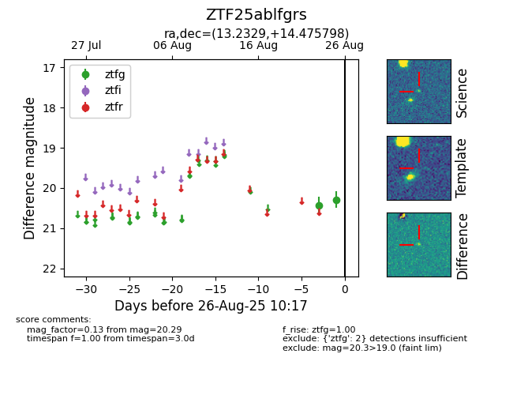

Target ZTF25ablfgrs at 2025-08-26 10:17, see:
FINK: fink-portal.org/ZTF25ablfgrs
Lasair: lasair-ztf.lsst.ac.uk/objects/ZTF25ablfgrs
ALeRCE: alerce.online/object/ZTF25ablfgrs
alt names
ZTF25ablfgrs (ztf,fink)
coordinates:
equatorial (ra, dec) = (13.2329,+14.47580)
galactic (l, b) = (123.4765,-48.39437)
photometry
last ztfg=20.29
2 ztfg detections
